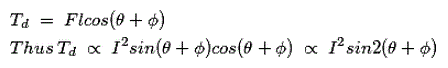

This instrument is one of the most primitive forms of measuring and relay instrument. Moving iron type instruments are of mainly two types. Attraction type and repulsion type instrument.
Whenever a piece of iron is placed nearer to a magnet it would be attracted by the magnet. The force of this attraction depends upon the strength said magnetic field. If the magnet is electromagnet is electromagnet then the magnetic field strength can easily be increased or decreased by increasing or decreasing electric current through its coil. Accordingly the attraction force acting on the piece of iron would also be increased and decreased. Depending upon this simple phenomenon attraction type moving iron instrument was developed.
Whenever two pieces of iron are kept side by side and a magnet is brought nearer to them the iron pieces will repulse each other. This repulsion force is due to same magnetic poles induced in same sides the iron pieces due external magnetic field. This repulsion force increases if field strength of the magnet is increased. Like case if the magnet is electromagnet, then magnetic field strength can easily be controlled by controlling input electric current to the magnet. Hence if the electric current increases the repulsion force between the pieces of iron is increased and it the electric current decreases the repulsion force between them is decreased. Depending upon this phenomenon repulsion type moving iron instrument was constructed.
Construction of Moving Iron Instrument
The basic construction of attraction type moving iron instrument is illustrated bellow
A thin disc of soft iron is eccentrically pivoted in front of a coil. This iron tends to move inward that is from weaker magnetic field to stronger magnetic field when electric current flowing through the coil. In attraction moving instrument gravity control was used previously but now gravity control method is replaced by spring control in relatively modern instrument. By adjusting balance weight null deflection of the pointer is achieved. The required damping force is provided in this instrument by air friction. The figure shows a typical type of damping system provided in the instrument, where damping is achieved by a moving piston in an air syringe.
Theory of Attraction Type Moving Iron Instrument
Suppose when there is no electric current through the coil, the pointer is at zero, the angle made by the axis of the iron disc with the line perpendicular to the field is φ. Now due electric current I and corresponding magnetic field strength, the iron piece is deflected to an angle θ. Now component of H in the direction of defected iron disc axis is Hcos{90 - (θ + φ) or Hsin(θ + φ). Now force F acting on the disc inward to the coil is thus proportional to H2sin(θ + φ) hence the force is also proportional to I2sin(θ + φ) for constant permeability. If this force is acting on the disc at a distance l from the pivot, then deflection torque,

Since l is constant.
Where k is constant.
Now, as the instrument is gravity controlled, controlling torque will be
Where k' is constant.
At steady state condition,
Where K is constant.
 by
by